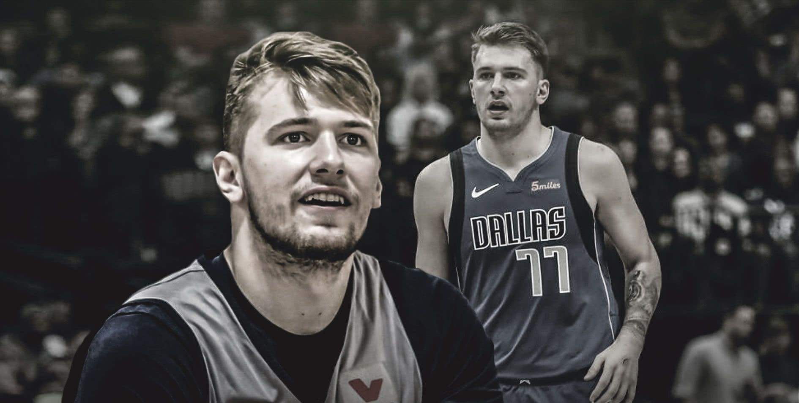

欧洲联赛时期
2015年4月30日年仅16岁2个月零2天的卢卡在西班牙甲级联赛皇马对阵马拉加银行的比赛完成自己职业联赛首秀，拿下三分。他也成为西班牙甲级联赛中第三位完成首秀最年轻的球员 ，紧随卢比奥(14岁11个月)和雷波罗(15岁3个月)之后。在这之后他还参加了2015年西甲的季后赛和2015年国际篮联洲际杯。
2015-2016赛季他都入选了的西班牙甲级联赛(成为当赛季最年轻的球员)和欧冠联赛皇马12人大名单，在西班牙甲级联赛的第八周皇马和毕尔巴鄂的比赛中，他拿到在西甲个人最好数据:15分，6个篮板，4次助攻和22分的最有价值球员评分指数(西甲为评每周最有价值球员的数据参照)，他的这些数据都刷新了联盟中17岁以下球员场上数据和评分指数的记录。
在西甲2016-2017赛季第十一轮皇马对阵巴塞罗那丰拉夫拉达的比赛中，东契奇砍下23分，11个篮板，得到34分的最有价值球员指数，获得第十一轮比赛周MVP。
2017年10月13日，在欧洲篮球联赛皇家马德里88-74战胜阿纳多卢艾菲斯的比赛中，皇家马德里球员卢卡·东契奇出战26分钟14投9中罚球7罚6中得到27分4篮板4助攻。
2018年5月20日，欧洲篮球联赛(EuroLeague官方宣布，来自皇家马德里队的后卫卢卡·东契奇包揽了2017-2018赛季欧洲联赛最有价值球员及最佳新秀奖项。在欧洲篮球联赛半决赛中，东契奇出场30分钟，12投4中，三分球6投2中，罚球8罚6中得到16分7篮板2助攻1抢断，帮助皇家马德里92-83战胜莫斯科中央陆军杀入到决赛。
2018年5月21日，皇家马德里以85-80击败费内巴切，夺得欧洲篮球联赛冠军。东契奇本场比赛上场29分钟，8投3中，罚球10投8中，得到15分3篮板4助攻1抢断，并当选最终四强赛MVP。19岁的东契奇也成为了历史上获得最终四强赛MVP最年轻的球员。
2018年6月20日，在西班牙男篮甲级联赛决赛中，皇马客场96-85战胜巴斯克尼亚，从而以大比分3-1获得了2017-2018赛季西甲冠军。皇马球员东契奇出场29分钟，得到15分3篮板4助攻。
NBA时期
2018年6月22日，在NBA选秀大会中，卢卡·东契奇在首轮第3顺位被亚特兰大老鹰队选中，随后被交易至达拉斯独行侠队。

东契奇